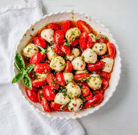

Ingredients:
- 2 ripe tomatoes, sliced
- 150g fresh mozzarella cheese, sliced
- Fresh basil leaves
- Extra virgin olive oil
- Balsamic vinegar (optional)
- Salt and pepper (to taste)
How to prepare:
- Arrange alternating slices of tomato and mozzarella on a plate.
- Tuck fresh basil leaves between the tomato and cheese slices.
- Drizzle with olive oil and balsamic vinegar (if using).
- Season with salt and pepper to taste.